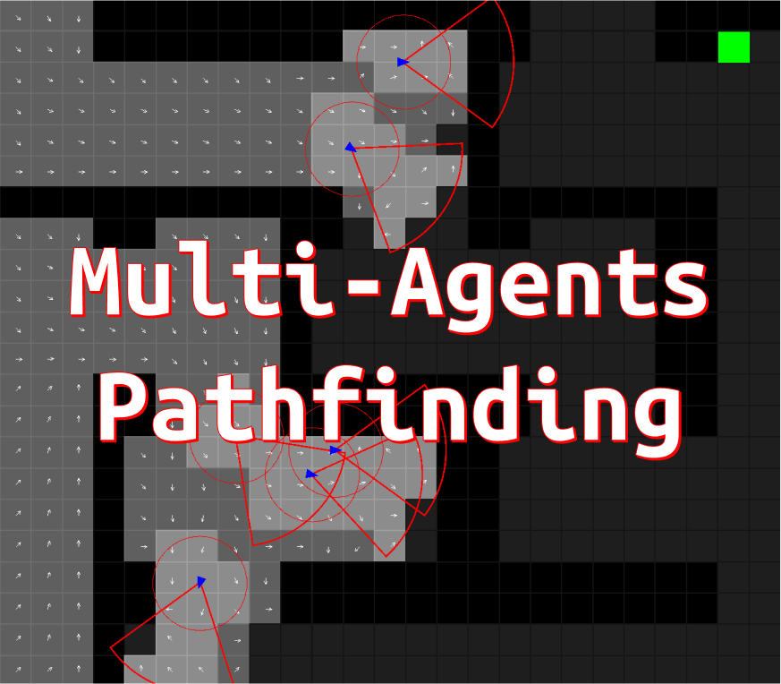

AI research project · 2024 P-03
Multi-Agent Pathfinding
Navigation for large groups of NPCs across procedurally generated terrain under fog of war — aimed at real-time strategy, stealth and open-world exploration.
The problem
Pathfinding one agent is a solved problem. Pathfinding fifty, through terrain they haven't seen yet, without them clumping, oscillating or walking through each other, is not — and running A* per agent per frame doesn't scale.
The approach
We combined three techniques rather than picking one. Flow fields let the whole group share a single navigation solve instead of computing a path each. Potential fields handle dynamic obstacle avoidance and keep agents from overlapping. Heat maps prioritise which areas are worth exploring, so agents under fog of war spread out to cover ground instead of all following the same trail.
Where it applies
The combination suits genres where a crowd has to look deliberate — RTS unit groups, stealth AI sweeping a space, open-world NPCs exploring terrain the player has also never seen.
Live demo
Play & watch
Gallery
